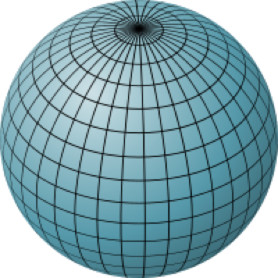
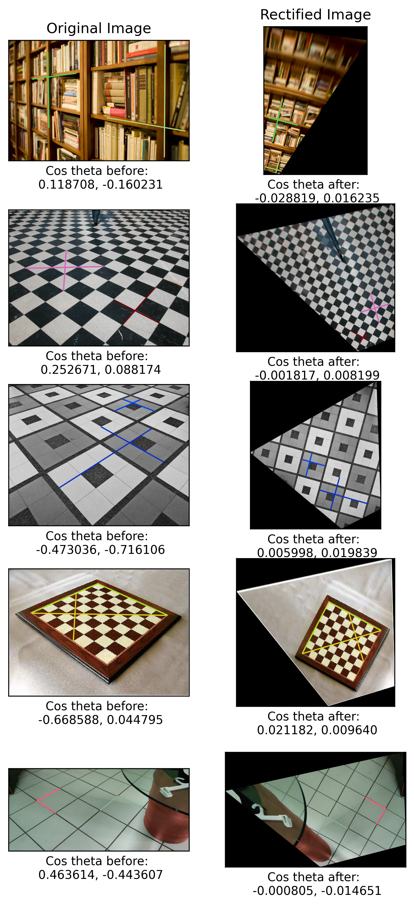

**NOTE: Images are high resolution, please zoom-in if required**
An affine transform preserves the line at infinity. We can rectify the effects of a general projective transform upto an affine transform by identifying 2 pairs of parallel lines through annotations, finding their respective points of intersection and using the line joining these points as the line at infinity \(l\). The problem then reduces to finding a mapping that maps \(l\) back to its cannonical form : \(l_{\infty} = (0, 0, 1)^T\). Assuming that the imaged line at infinity is, \[l = (l_1, l_2, l_3)^T\] It can be shown that with, \[ \begin{equation} H = H_A\begin{bmatrix} 1 & 0 & 0 \\ 0 & 1 & 0 \\ l_1 & l_2 & l_3 \end{bmatrix} \end{equation} \] \[ H^{-T}\begin{bmatrix}l_1\\ l_2 \\ l_3\end{bmatrix} = \begin{bmatrix}0 \\ 0 \\ 1\end{bmatrix} \] where \(H_A\) is any general affine transform. In my implementation I chose \(H_A\) to be identity. The line \(l\) can be determined from 2 annotations of parallel lines as follows: For two imaged parallel lines \(m_1\) and \(m_2\), if \(x_1\),\(x_2\) constitute points on line \(m_1\) and \(x_3\),\(x_4\) are the points on line \(m_2\) \[ m_1 = x_1 \times x_2 \\ m_2 = x_3 \times x_4 \] Intersection of \(m_1\) and \(m_2\) will be on a point at infinity given by, \[ p_1 = m_1 \times m_2 \] Similarly from another pair of annotation, we get \[ p_2 = m_3 \times m_4 \] The line passing through these points at infinity is, \[ l = p_1 \times p_2 \] Thus, I use equation (1) as \(H_{affine}\)

We know that the conic \(C_{\infty}^{*}\) (dual to circular points) is fixed under similarity transform. Similar to affine rectification, we can recover metric properties of an image by transforming the circular points to their cannonical location. Given an affine rectified image, we use 2 constraints to specify the 2 DOFs of circular points. These 2 constraints are obtained from 2 imaged right angles on the world plane. Suppose the lines \(l^{'}\), \(m^{'}\) in the affine rectified image are orthogonal. For the transformed conic \(C_{\infty}^{*'}\), \[ l^{'T}C_{\infty}^{*'}m^{'} = 0 \] Also, since the image is affine rectified, \[ C_{\infty}^{*'} = \begin{bmatrix} a & b/2 & d/2 \\ b/2 & c & e/2 \\ d/2 & e/2 & f \end{bmatrix} \quad d=e=f=0 \] Thus, using the above two equations we get, \[ \begin{bmatrix}l^{'}_1m^{'}_1 & (l^{'}_1m^{'}_2+m^{'}_1l^{'}_2)/2 & m^{'}_2l^{'}_2\end{bmatrix}\begin{bmatrix}a \\ b \\c\end{bmatrix} = 0 \] from one set of perpendicular annotations. Since the above equation only has 2 DOFs (upto scale), we use another perpendicular constraint to get a system of equation of the form \[ \begin{equation} Ax=0 \quad where \quad x = \begin{bmatrix}a \\ b \\c\end{bmatrix} \end{equation} \] Solving with SVD decomposition, we resolve the \(C_{\infty}^{*'}\) matrix. Now we need to compute \(H\) such that \(HC_{\infty}^{*'}H = C_{\infty}^{*}\). Again via SVD decomposition, it can be shown that \[ H = \begin{bmatrix} \sqrt(\sigma_1^{-1}) & 0 & 0 \\ 0 & \sqrt(\sigma_2^{-1}) & 0 \\ 0 & 0 & 1 \end{bmatrix} U^T \] where \(U\) comes from \(C_{\infty}^{*} = UDV^T\). Thus, using 2 perpendicular annotations, as seen in the images above, we solve the system of equations in eqn (2) to get \(C_{\infty}^{*}\) and get H from SVD of it.

Fig. Warping cover of a book onto another book on a table
Fig. Warping a portrait wallpaper of a car onto a phone placed on a table
Homography between 2D correspondences can be calculated using the DLT algorithm. The implementation can be summarized as follows:
Given 4 2D-2D correspondences \(\{x_i, x_i^{'}\}\), we compute H \(s.t\) \(x_i^{'}=Hx_i\)
1. To balance the scale of elements, we normalize both \(\{x_i, x_i^{'}\}\) using a similarity transform \(T\) such that, the centroid of the scaled points \(\{x_i^{\sim}, x_i^{\sim'}\}\), is \((0,0)\) and each point is atmost \(\sqrt2\) from it.
2. Apply DLT on the normalized co-ordinates which involves solving the homogeneous system of equations \[ \begin{equation} Ah = 0 \end{equation} \] where, \[ A_i = \begin{bmatrix} 0 & -w^{'}\mathbf{x}^T & y^{'}\mathbf{x}^T \\ w^{'}\mathbf{x}^T & 0 & -x^{'}\mathbf{x}^T \end{bmatrix} \]
3. Denormalize: \(H = T^{'-1}H^{\sim}T\)
In the actual implementation, I found it easier to use the skew-symmetric form of cross product for getting \(A\). I also tried to use the closed form solution from the equations above as an intial guess to optimize for pixel projection loss but found little improvement.Input Images: Beethoven, Van-Gogh and Monalisa in the order of appearance


Perspective Image: Exhibits in an art gallery

Output

Implementation
The implementation is quite similar to Q3. Since we have multiple "normal" images, we first create a mapping between which source image will warp to which destination points in the perspective image. Following that we compute homography for each warp independently and then sequentially use the output of first warp as input to next one. Core algorithm remains same as Q3 only the handling of inputs and outputs changes.